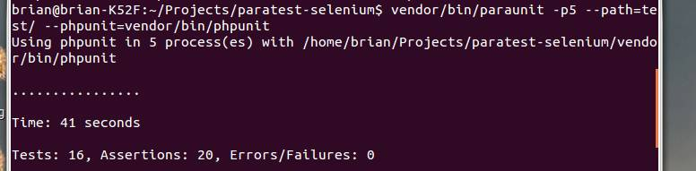
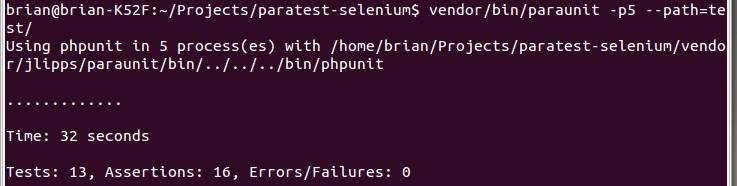

ParaTest - Testing In Parallel With PHPUnit
Brian Scaturro
@scaturr
http://github.com/brianium/
The Problem:
Testing can be slooooooow.
But Why?!?!?
No multithreading.
A significant blow to PHP's multitasking abilities. As a result, things are executed
from top to bottom in a single thread. It should then come as no surprise that......
PHPUnit runs tests serially.
PHPUnit runs every test consecutively. Long running tests can be a huge bottleneck in this scenario.
Long running tests?
Think functional tests. Automating user interface tests can be quite time consuming.
The Solution: Concurrent Over Consecutive
Given PHP's threadless nature, one solution comes to mind.
proc_open ("phpunit", ... , ...);
We don't have threads, but we can open new processes.
Current Contenders
There are a couple of solutions out there that follow this method. The typical procedure is to
do something along the lines of:
-
Grep for test methods or load a directory of files containing test suites.
-
Open a process for each test method or suite.
-
Parse output from STDOUT pipe, or get output from a temporary log file.
This method can get the job done, but it suffers from a few significant limitations.
paraunit
https://github.com/jlipps/paraunit
Pros
paraunit gets points for speed. Results are read from each processes' STDOUT, which cuts down
on overhead involved with creating temp files. Great for functional tests.
Cons
Test methods are searched by pattern in source files like so:
preg_match_all("/function (test[^\(]+)\(/", $file_str, $matches, PREG_PATTERN_ORDER);
This method creates several problems.
No support for annotated methods
/**
* @test
*/
public function twoTodosCheckedShowsCorrectClearButtonText()
{
$this->todos->addTodos(array('one', 'two'));
$this->todos->getToggleAll()->click();
$this->assertEquals('Clear 2 completed items', $this->todos->getClearButton()->text());
}
No support for inheritance
abstract class TodoTest extends PHPUnit_Extensions_Selenium2TestCase
{
protected $browser = null;
public function setUp()
{
//configure browser
}
public function testTypingIntoFieldAndHittingEnterAddsTodo()
{
//...
}
}
class ChromeTodoTest extends TodoTest
{
protected $browser = 'chrome';
}
class FirefoxTodoTest extends TodoTest
{
protected $browser = 'firefox';
}
And...
Can only run methods in parallel.
This is perfect for functional tests, but it rules out the ability to run test suites
in parallel.
Trickier to add annotation support.
Parsing a file for annotations to add support for them later can be cumbersome.
ParaTest At Bat
http://github.com/brianium/paratest
Pros
ParaTest addresses the cons mentioned previously. Support for @test methods, inheritance, and the running of both suites and methods. Methods
are searched for via reflection so adding support for other annotations is a snap.
Cons
ParaTest aggregates results from the standard JUnit xml format. Reflection and file I/O come at a price,
and speed does take a minor hit as a result.
A tad slower
The following are the result of paraunit and ParaTest running the same functional test:
paraunit

ParaTest
The Example
http://github.com/brianium/paratest-selenium
Testing The Backbone.js Todo App
paraunit

At first glance, this appears to have run much faster than before.
Notice that only 13 tests were run. This is a result of @test methods
not being run.
PHPUnit
A clear loser in this scenario. Both parallel implementations outperform vanilla
PHPUnit.